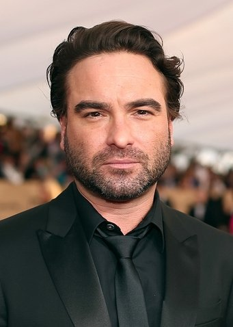
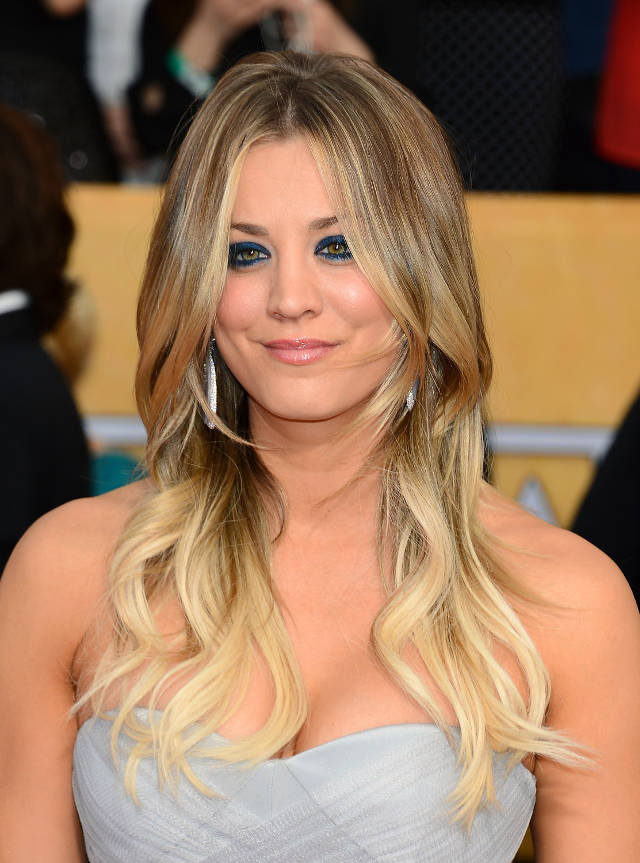
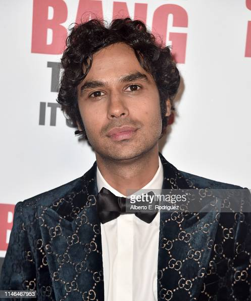
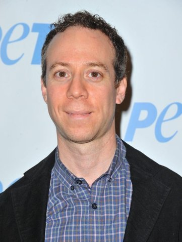
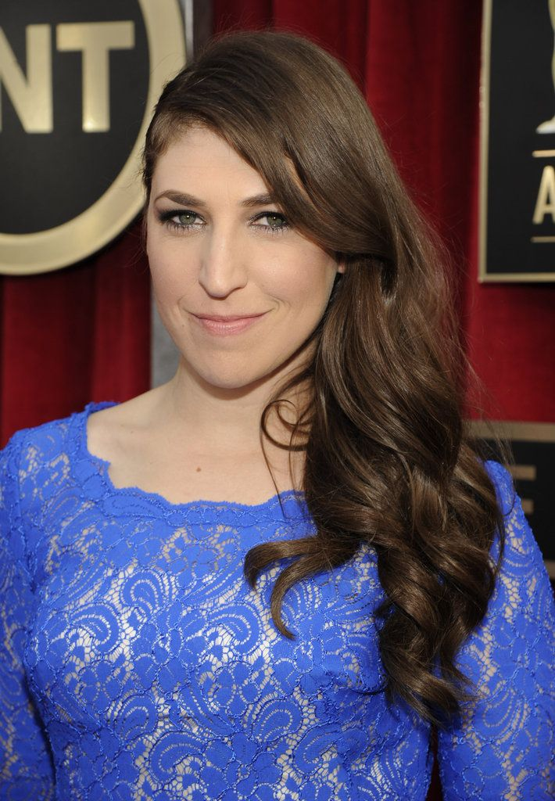

Personagens
A série acompanha a historia de um grupo de amigos que vivem em Pasadena, Califórnia. A turma é formada por Leonard Hofstadter (Johnny Galecki) e
Sheldon Cooper (Jim Parsons) dois brilhantes físicos que inicialmente dividem um apartamento; Penny (Kaley Cuoco),uma garçonete e aspirante a atriz que mora do outro lado do corredor que desenvolve uma relação com Leonard; os colegas de trabalho de Leonard e Sheldon igualmenet geek e socialmente desajeitados, o engenheiro aeroespacial Howard Wolowitz (Simon Helberg)
e o astrofísico Raj Koothrappali (Kunal Nayyar)
Ao longo da historía da série outros personagens foram adicionados ao grupo, incluindo Stuart Bloom (Kevin Sussman), dono de uma loja de quadrinhos frequentada pelos amigos; Bernadette Rostenkowski (Melissa Rauch), colega de Penny que desenvolve uma relação com Howard; e Amy Farrah Fowler (Mayim Bialilk),
que se envolve com Sheldon.
| Jim Parsons (Sheldon Cooper) | Johnny Galecki (Leonard Hofstadter) | Kaley Cuoco (Penny) | Simon Helberg (Howard Wolowitz) | Kunal Nayyar (Raj Koothrappali) | Kevin Sussman (Stuart Bloom) | Melissa Rauc (Bernadette Rostenkowski) | Mayim Bialilk (Amy Farrah Fowler) |
|---|---|---|---|---|---|---|---|
|  |  |  |  |  |